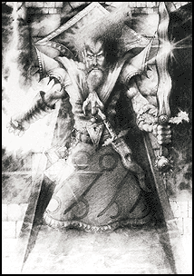

Forums galactiques > Assemblée Galactique : diplomatie officielle > LANCEMENT DE LA PROCEDURE ELECTORALE
| Aramon Respect diplomatique : 15  29/01 ETU 21:00  | Score : 0 Détails Il vaut mieu avoir un gouvernement provisoir et une galaxie en ordre qu'une galaxie livré a elle même. Et ce gouvernement vise juste a maintenir l'ordre mais pas a faire passer des lois ou tout autre chose, juste pour l'ordre.
En attandant les elections, Aramon | ||
| Les Cent Familles Respect diplomatique : 136  29/01 ETU 21:05 | Score : 0 Détails Aramon, vous êtes nouveau. Nous sommes désolées de le dire, mais vous manquez de recul historique : il y a déjà eu des élections. Il s'agit de renouer avec. Un gouvernement provisoire en attente de quoi ? En outre, le passé a prouvé qu'un gouvernement sans base fiscale et légale n'a aucun moyen de faire respecter l'ordre, ni aucune légitimité à le faire...vous imaginez l'arbitraire que ce serait ?
Participez, commandants ! Où sont donc nos adeptes de la démocratie, maintenant qu'il s'agit de l'organiser ? | ||
| Aramon Respect diplomatique : 15 29/01 ETU 21:13 | Score : 0 Détails Je reconnais que je suis nouveau et votre avis sur mon statut par rapport aux histoires politique précédent mon arrivée qui me sont presque totalement inconnu, m'a ouvert les yeux. Donc je me mettrais en retrait par rapport à ce débat politique.
Cordialement, Le Commandant Aramon. | ||
| wima Respect diplomatique : 402  29/01 ETU 21:18 | Score : 0 Détails Je ne saurais que trop vous encourager à continuer de participer activement à la vie galactique, cher Aramon. Justement parce que vous êtes nouveau ! L'avis des jeunes fait à mon sens partie intégrante de la politique !
| ||
| tyrus gorman Respect diplomatique : -6  29/01 ETU 21:23 | Score : -3 Détails maintenant tréve de flaterie il est suffisament tard pour démarrer l'élection!
| ||
| Eghinard Respect diplomatique : 111  29/01 ETU 21:37 | Score : 4 Détails Commandants,
Il est temps de raisonner un peu au-delà des sophismes stériles. Je prends la parole pour expliciter et renforcer le discours de CharleMagne. Celui-ci je pense, s'adresse surtout aux innombrables commandants silencieux. Ce que dit CharleMagne c'est que les élections sont du vent. Vous voulez organiser des élections, excellent. Mais comment penser à des élections alors qu'il n'existe pas de société politique. J'ajouterai même qu'il n'y a pas de communauté politique ni de communauté tout court donc rien sur quoi fonder cette communauté politique hypothétique. Sur quoi reponse une communauté ? Le caractère biologique, la religion, le territoire, l'Etat ou encore l'intérêt économique. Aucun de ses aspects n'unifie la galaxie. Et si quelqu'un croit en une Société Galactique, chimères. Au moins deux questions fondamentales se posent : - Combien de commandants se sentent solidaires de la galaxie ? - Combien sont prêts à déléguer de leur souveraineté ? Tout cela ne traduit qu'une volonté d'appliquer aux autres vos choix d'organisation. La seule solution envisageable serait de mette en place des accords bilatéraux en vue de la construction d'une fédération. Voilà donc pourquoi CharleMagne insiste sur le fait que l'avènement de l'Empire Romain rénové ne doit pas vous faire craindre pour l'indépendance et l'intégrité de vos royaumes. Patriotismes et particularismes locaux n?entrent pas en conflit avec la citoyenneté impériale, patrie juridique du Jus honorem et Jus suffragii, qui, dans le passé, comme dans le futur, « ouvre seule vocation au gouvernement du monde. » | ||
| Rudzain Respect diplomatique : 45  29/01 ETU 21:50 | Score : 2 Détails Donc si je comprend bien votre propos vous souhaitez un Empire avec un empereur choisi par lui-même régnant sur la galaxie plutôt qu'une Démocratie gouvernant la galaxie avec un Gouvernement et un Parlement élus ?
De plus : 1 : On ne peut forcer personne à voter, si quelqu'un juge que les partis en place ne sont pas satisfaisant il n'a qu'a créer le sien (ce que j'ai fait par exemple). 2 : Votre Empire n'aurait aucune légitimité si il était imposé parce que vous l'avez décidé. 3 : Même si vous obteniez un jour ou l'autre par les urnes la mise en place de votre Empire sachez que cela ne saurait être définitif, étant donné que pour réellement représenter la volonté du peuple il faut organiser des élections régulièrement. | ||
| ackamoth Respect diplomatique : 4 29/01 ETU 22:02 | Score : 0 Détails De ce que je comprend de propos apporter ici par le commandant Eghinard,n'est pas la mise en place d'une souvrainete ou empire instaurer par la force et la violence,mais bien l'instauration de "principes economique, millitaire ou religieux" sur lesquels une futur democratie pourras se base en fait pour faire les basses des sa campagne electoral.
Ils auraient un point un communs a tous les peuples de cette galaxies,ou peu importe la coaliation qui sera porter au pouvoirs, tous peuples aura au moins un point d'attache a ce gouvernement. Je ne sais pas si mes propos sont claire et si tel n'est pas le cas ne vous genez pas pour le faire savoir et je ferez de mon mieux pour les rendrent plus comprhensif. | ||
| Siklariis Respect diplomatique : 222  29/01 ETU 22:27 | Score : 0 Détails BONSOIR A TOUS LES COMMANDANTS,
Le Commandant Gabriel Fore semble avoir des occupations l'empechant d'intervenir ici et j'ai donc jugé bon de présenter moi même les Hydropathes et de donner leur programme (rédigé il y a déjà un moment par MR.Fore). Les Hydropathes sont un parti mais plus particulièrement un regroupement de plusieurs personnes issus de toute les Coalitions. En effet nous pronons la liberté et la diversité et cela ne peut se faire sans l'acceptation des propositions et des idées de tout le monde ! Les Hydropathes pensent qu'une personne ne peut pas être jugée sur ce qu'elle est mais sur ce qu'elle fait et/ou dit. Nous pronons l'idée que tout le monde peut changer et apporter quelque chose de constructif. Nous voulons l'écoute de chacun, le respect et la vie en harmonie de tous les peuples autour d'une idée commune : celle de partager les idées de tous, de se battre pour ses idéaux et surtout pour un avenir satisfaisant tout le monde ! LES HYDROPATHES ONT GRIÉS ET NOUS VOULONS AVANT TOUT AUTRE CHOSE QUE CHACUN GRIE POUR L'AVENIR DE LA GALAXIE ET POUR UNE PRISE DE CONSCIENCE GENERALE AFIN QUE L'UNIVERS SOIT UNIS ET SURTOUT : LIBRE !!! SACHEZ que nous n'obligeons personne à voter pour nous, cela serait contraire à nos principes. Mais si vous avez grié et que vous souhaitez associer les principes de ce pacte à un parti, alors les Hydropathes est celui pour lequel vous devez accorder votre confiance dans le respect de ce pacte ! -> Pour la Paix et l'Unité des mondes formant l'Humanité ! <- => Voici le programme : A la base, les Hydropathes sont un projet lancé a plusieurs par quelques commandants étouffé par la division en deux de l'univers, elle a pour but de representer la diversité, la paix et la liberté aux sein d'une même coalition. Pour ceci, nous pouvons compter sur le soutien de plusieurs petits commandants, de commandants importants d'autres coalitions, de commandants révolutionnaires et d'un programme clair, net, précis, mais surtout démocratique. - Redistribution des impôt : L'impôt a trop longtemps été a sens unique. Nous proposons de reverser une partie des impôt a la banque galactique, une autre aux ministére des petits commandants et la troisième partis a ceux qui en font la demande aux tribunal des plaintes. - Création de la banque galactiques, maitre dess prêt, fructification d'argent sur les fond du gouvernement. - Création d'un Journal totalement Libre (premier numéro en cours de redaction actuellement) - Création du ministére aux petits commandants, commandé par les petits commandants POUR les petits commandants. - Création de la cour des plaintes, ou tous pourrait poser une plainte sur le gouvernement. - Remise dans ses droits du tribunal d'Ariétan avec des moyens du gouvernement. - Création de la force d'interposition, qui aurait le droit, si la plainte a été déposé a la cours et si le gouvernement a donné son accord, de s'interposer entre deux commandants qui se font la guerre pour promouvoir la paix. - Le pouvoirs fondé sur les qualités, une méritocratie unique. Notre partis représente la diversité ; et si, par exemple, un AST est bon en redistribution, il se retrouvera dans le ministére de la redistribution, qu'il soit AST ou pas ; si un Ultrème se trouve bon dans la force d'interposition, il en prendra le commandement (s'il se plie aux ordres, bien sûr) qu'il soit Ultrèmes ou pas. - Création d'une nouvelle Constitution universelle Galactique et Democratique avec Siiklaris ( plus d'infos : http://www.siklariis.fr.tc ) Les Hydropathes sont actuellement le seul partis qui arrive a faire l'unanimité plus ou moins grande autour de lui et d'avoir reçue l'aide, souvent officieuse, de plusieurs "grands". Plus de précision par MP si vous voulez prendre connaissance du message envoyé à ceux désirant nous rejoindre au sein du partis.. Je vous remercie ; Gabriel Fore." Voila donc les dernière informations et ce qui est proposé ! En votant pour les Hydropathes, vous affichez votre désir de voir une galaxie sans non-dit, sans inégalités qui soit à l'écoute de toute et de tous ! Je tiens aussi à rajouter que les Hydropathes vont surement présenter une liste commune avec le PPG mais cela n'est pas encore sur et j'attendrai que Gabriel Fore le confirme. De plus, il viendra peut-être aussi appuyer les arguments du parti et moi j'en ferais à nouveau de même car plein de choses doivent êtrent dits pour prouver que les Hydropathes sont le parti qu'il faut à ce monde corrompu ! " POUR UNE GALAXIE HEUREUSE, VIVANTE, LIBRE ET FORTE ! " Merci ; Siklariis Tahl. | ||
| CharleMagne Respect diplomatique : 137  29/01 ETU 23:36 | Score : 2 Détails Commandants, Commandantes,
Nous avons plusieurs fois recommandé de fréquenter les écoles. Pour apprendre à lire et à comprendre ce qu?est écrit. Mon conseiller et ami Eghinard Nous semble explicite, néanmoins quelque jeune commandant semble mal comprendre et alors Nous clarifions: - Nous n?imposons pas quoi que se soit. Nous avons nos lois et nous le respectons, d?autres commandants réunis dans un territoire ou une coalition peuvent avoir leurs lois. Nous n?attaquons personne. S'il nous est arrivé de conduire des campagnes militaires il fut seulement pour causes justes et saintes. - Nous ne Nous sommes pas choisi à gouverner par nous-mêmes. Nous portons la lourde responsabilité d?être le roi des Francs et des Lombards par naissance et pour vouloir de l?Eglise. - Nous n?avons jamais proposé d?élections. A présent Nous cherchons à établire un dialogue permettant d?avancer vers de règles susceptibles de garder la paix dans la galaxie. Finalement Nous ajoutons qu?il saurait plus outil si en plus des propositions, les Commandants intervenant dans le débat apportent l?expérience des initiatives qu?ils ont déjà réalisées dans leurs territoires ou dans leurs coalitions. CharleMagne Roi des francs et des Lombards Fondateur de l?Europe | ||
| titan14 Respect diplomatique : 187  30/01 ETU 00:06 | Score : 0 Détails L'idée de proposer des élections est excellente
Le débat est intense Mais au delà du débat, il faudra bien organiser les élections Il conviendra de veiller à ce qu'elles soient démocratiques et libres (aucune pression exervées sur les votants) Comment pensez vous faire pour assurer leur régularité ? Une simple question : quelle technique utiliserez vous pour garantir qu'il n'y aura qu'un seul vote - donc une seule voix - par commandant ? Salutations galactico systémiques à la noble assemblée | ||
| maitre yoda Respect diplomatique : 391  30/01 ETU 00:14 | Score : 1 Détails Nous utilisons la technique mise en place par dieu lors des premières élections galactiques, et qui sert également pour les votes divers et en tous genres, elle est donc totalement indépendante des partis, et semble jusque là parfaitement adaptée. Je n'en connais pas le détail, mais les commandants ne peuvent voter qu'une fois, cela est certain.
Nous avons désormais 4 partis candidats, et il me semble bienvenu que chacun présente une liste des membres potentiels du gouvernement, si celui-ci est effectivement élu au scrutin majoritaire. Il serait également temps de proposer des candidats au poste de député dans l'assemblée législative, à moins que nous décidions que l'AG servira elle même d'assemblée législative. | ||
| titan14 Respect diplomatique : 187 30/01 ETU 00:17 | Score : 0 Détails Merci Maitre Yoda
Rapide et efficace comme d'habitude par ailleurs Mais ceci a au moins pour effet de rassurer tout le monde | ||
| le mort Respect diplomatique : 35 30/01 ETU 04:17 | Score : -3 Détails maitre yoda quelle sont ces 4 parti que vous dites qui ce presente pour voir si il y en as d'autre qui veulent si ajouter
| ||
| Synoxis Respect diplomatique : 86  30/01 ETU 05:19 | Score : 0 Détails Cher commandant, le PPG devrait se dépêcher de présenter sa candidature et d'exposer son programme s'il veut se présenter, car je crois pour l'instant qu'il n'a pas été compté parmi ces 4 partis.
| ||
| le mort Respect diplomatique : 35 30/01 ETU 06:56 | Score : -1 Détails D'accord alors je presente notre candidature et notre coalition vas se depecher a faire notre programme pour le presenter
| ||
| cortana Respect diplomatique : -232  30/01 ETU 07:42 | Score : -4 Détails tien comme on le remarque au debut l'ast est contre un gouvernement de coalition...
a oui c'est inaceptable vous risquer de ne pas avoir TOUS les pouvoir! oui les ultremiste vont vous enpecher d'etre tyranique. cortana. | ||
| maitre yoda Respect diplomatique : 391 30/01 ETU 11:35 | Score : 0 Détails Alors, nous avons cinq listes candidates :
- le SLIP - la Coalition - les Hydropathes - le PPG - l'AST Si tout le monde est d'accord, nous pouvons clôre, enfin, les inscriptions. Le gouvernement sera élu au scrutin majoritaire, et une assemblée législative sera organisée au sein de l'Assemblée Générale. | ||
| Kela Respect diplomatique : 125  30/01 ETU 12:50 | Score : 0 Détails Non, une autre liste est candidate : Flower Power.
| ||
| Scrutin Galactique Respect diplomatique : 1 30/01 ETU 16:27 | Score : 0 Détails Ne vous inquiétez pas, très chère Kela, on ne vous a point oubliée...
|
Forums galactiques > Assemblée Galactique : diplomatie officielle > LANCEMENT DE LA PROCEDURE ELECTORALE